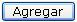
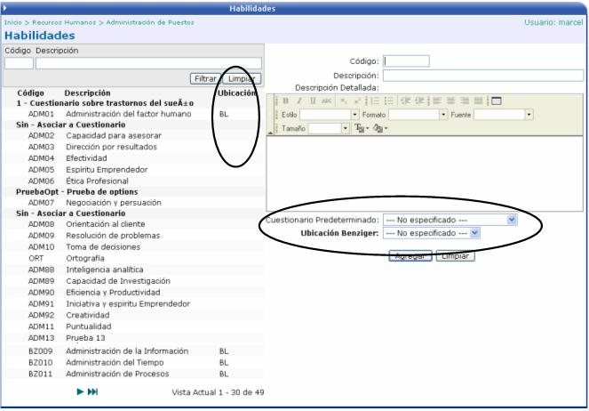
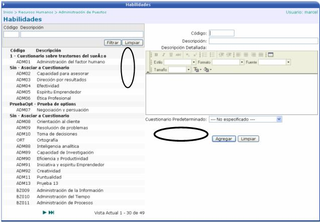
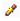
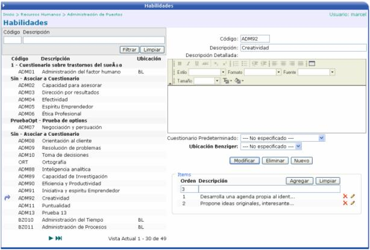

En esta opción se definen las habilidades que debe de tener un candidato para optar por un puesto. Aquí se crean todas las habilidades independientemente del puesto que las requiera. Cuando se vaya a crear el puesto a solicitar, es donde se le asociarán las habilidades específicas que tiene que tener la persona para ese puesto.
Se tiene que crear un código y un nombre de la habilidad. También se puede agregar una descripción más detallada, en el editor de texto. Además se le puede asociar un cuestionario y si el parámetro de “Activar Benziger”, de parámetros generales esta activado, se le puede agregar el tipo de Ubicación Benziger. Luego se presiona el botón

para guardar los cambios.

Si el parámetro Benziger esta inactivo, la columna de ubicación de la lista no se muestra, ni tampoco el campo de Ubicación Benziger en el mantenimiento:

Una vez creada una habilidad, se le pueden agregar ítems que la describan, si el usuario así lo requiere.
Elimina un ítem

Modifica un ítem
